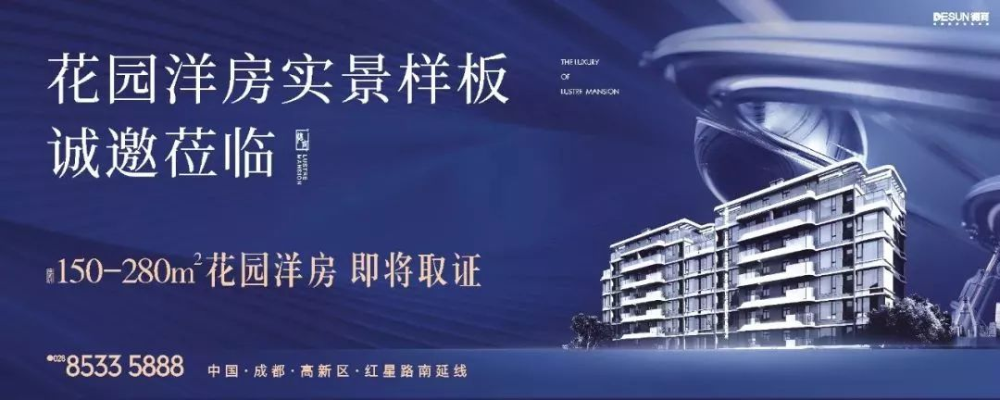

一个小区，七座水晶花园，每座都不一样。
城南新派豪宅开盘的这一刻，将被所有成都人铭记
上海为了建立太平洋西区最大的经济贸易中心，采用了拓展新城，优化老城的建设方向，如今浦东新区已然发展成为世界瞩目的东方明珠！
60年代的巴黎，为满足人口增长和建设发展空间的需求，也确立了拓展新城发展老城的建设方向，短短30年，这里就完成了逆天蜕变。
放眼成都，若将蓉城的斑斓岁月浓缩到一处，上下一千年是天府广场、一百年是春熙路，而见证了过去二十年风云变迁的，则是国际城南。
二十年，演绎生活方式 “ 三级跳”
1958年，纵贯成都南北的人民路正式开建，到2019年正好过去一个甲子。从“城南”到“新城南”，再到“国际城南”，每一次称谓的变化都堪称一次质的飞跃。
△下午六点的天府立交
沿着成都“百里城市中轴”天府大道一路南下，金融城、软件园、欧洲中心、科学城......一个个地标性建筑拔地而起，一批批新兴产业项目纷纷落地。沃野一片的城南浓缩了整个西南区域一流的城市资源，串联成片，勾勒出国际城南、天府新区新的城市天际线。
△金融城板块
在500强企业工作、住在大平层 ”也取代了“ 喝咖啡听音乐 ” ，成为国际城南生活主旋律。以怡心湖、南湖、兴隆湖、锦江生态带构建的公园城市，生态文明为引领，生产生活和生态空间相宜，自然经济社会人文相融，第二代城南，是快节奏和高品质。
从小资情调到CBD繁华，再到公园城市，近二十年来，成都城南上演了生活方式的“ 三级跳 ”，亦是成都升级蜕变的缩影。
一路向南，德商天骄系锻造新派豪宅
世界向东，中国向西，成都向南，地标向南；国际城南豪宅地标已然成形。当 “ 天骄系新派豪宅 ” 遇上 “ 公园城市 ” 样板区域，会碰撞出怎样的火花？
相较于神仙树的洋房、金融城的大平层，位于高新之心的德商御璟天骄以低密洋房为主要物业形态，在产品形态上更向上走了一步。而高层产品，延续了天骄系一贯遵循的“低密”，20000㎡的土地上只为生长202套房子。
△楼栋效果图
御璟天骄作为德商高端豪宅产品序列中拔尖产品之一，在品质上全面升级，足见德商对高新之心这片土地满满的诚意。
其一， “ 独 ”
德商不愧以 “ 豪宅专家 ” 著称，在新川板块，御璟天骄的七层洋房产品一枝独秀。1.6容积率真正低密，30米楼间距真正奢阔，七楼层高真正洋房，秒杀新川板块周边的联排类型产品，此谓 “ 新派豪宅”越级尺度！

△楼栋效果图
所谓“ 物以稀为贵 ”，客户不需要购买两三百平的房子，就能入住高新之心高端住区，享受居住功能完善和全系配套醇熟的真正花园洋房。
△楼栋效果图

其二， “ 秀 ”
杜绝一板一眼的“园林打造”，御璟天骄通过对空间出色的拿捏来营造丰富自然的体验。由道合园林景观设计团队倾力打造，集几十年的设计精髓，打造真正的园林之王，一个小区，七座水晶花园，每座都不一样。
水晶之境收罗万象，调色板上的色彩在景观轴中悉数展现，四季皆景；同时注重营造多层情境式体验，将“文化、休闲、娱乐”三线串联，动静分区，季向分明，全龄段户外生活全体验。
△水晶花园实景图
水晶花园的“秀”在于，这不仅仅是常规的植物搭配、花木栽培，更是现代建筑与轻奢园林最完美的融合。

其三， “ 准 ”
如果说 “ 独 ” 和 “ 秀 ”是德商深耕成都数十载的行业经验，“ 准 ” 则更见其严苛的选址标准 ——坐落高新之心，立足新川门户。
为什么众多高智商、高收入、高消费的人群喜欢聚集在城南？因为这里汇聚了全西部的一流城市资源：450家金融机构、405家总部经济、687家高端服务业，成都总共278家世界五百强企业，过半数均汇聚于此。此外，银泰旗下最高端的in系列商场银泰in99，伊藤生活馆，亚洲最大的单体建筑环球中心也都落址于此，作为城南商业配套的支撑。
△傍晚的城南
汇聚一流的商务资源以及多项高端商业，使德商迅速捕捉到这一板块的价值，毕竟唯有真正的CBD板块住区才能真正对标国际住区。
或许，在以直观数字和发展速度为衡量指标的今天，“快”早已是一种不容分说的发展形势。然而，有多少人向往加速的城南，就有多少人希望城南停下来，这亦是成都城南的AB面。因为快，只是生存，能停下来、慢下来，才是生活。
停下来，跟随御璟天骄回归到生活视角，或许，才能真正感受到城南的好。
【建面约147㎡平层洋房】
【建面约167㎡顶跃洋房】
【建面约257-287㎡底跃洋房】
即将开盘
恭迎品鉴

·END·
御璟天骄为本案推广名。本宣传资料所载内容仅为要约邀请，不构成对我司具有约束力的要约或最终承诺，最终以正式的商品房买卖合同约定及政府规划、批文为准。宣传资料中项目图片所展示内容为意境效果，仅供示意参考，并非我司承诺，最终实际效果以正式的商品房买卖合同约定为准。本项目周边规划在建项目及规划功能区等环境、市政配套设置的相关信息并非全部属于本项目用地红线范围内，我司系从公开渠道获得，地方政府可能对相关规划予以变更，我司不对规划信息做出任何承诺。本资料所发布内容为2019年4月24日前的信息，本公司保留对其内容修改的权利，敬请留意最新资料。